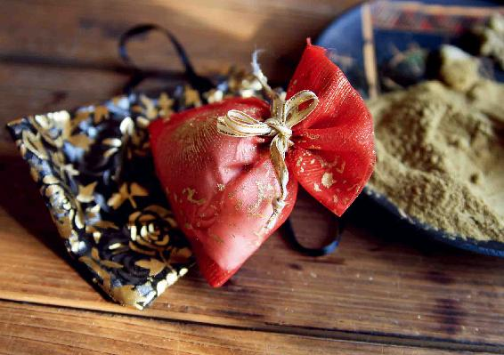
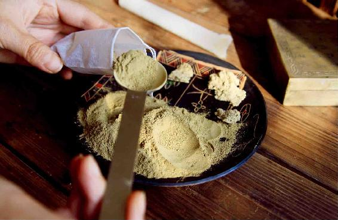
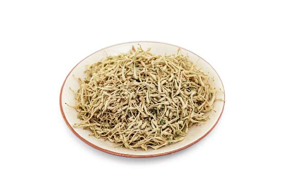
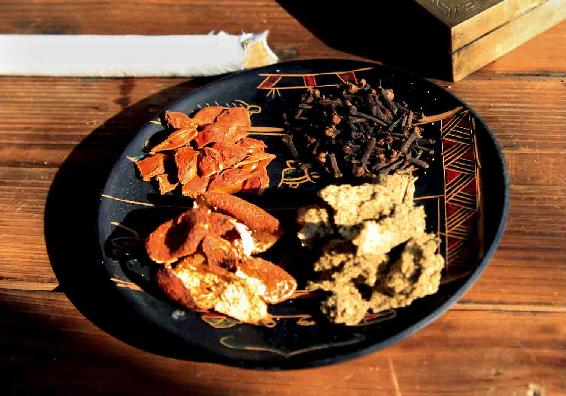
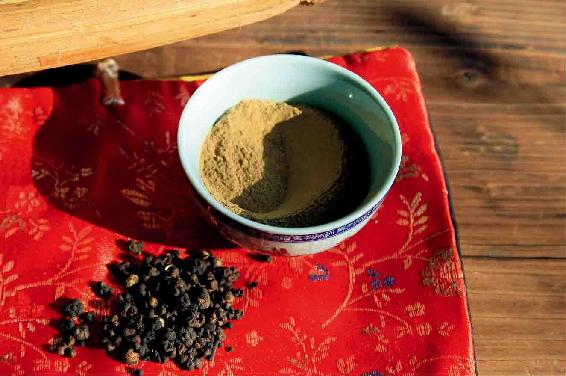
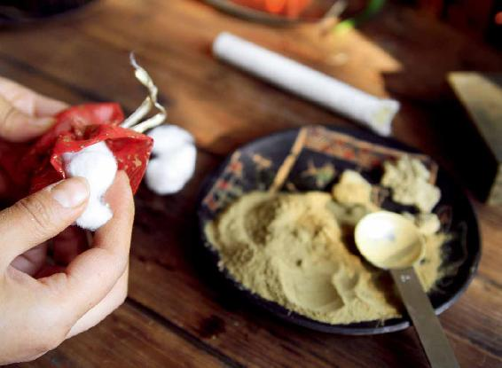
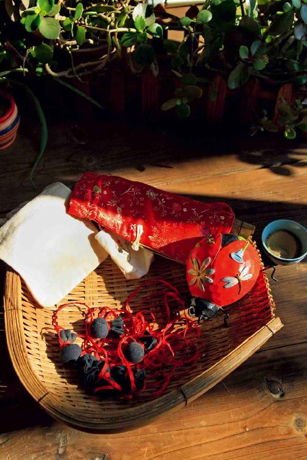
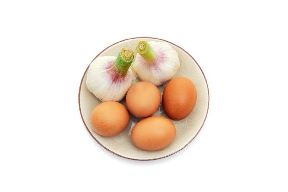
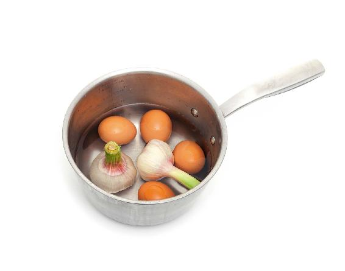
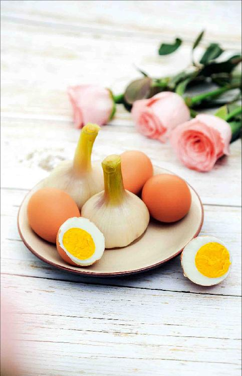

端午节在古代是一个很重要的节日，可以说是古代的全民卫生节，同时也是一个属于仲夏的节日。
端午节的养生之道，是不只限于端午节这一天的，它可以应用到整个农历五月——仲夏。
端午在南方也被称为端阳，因为端午节在农历的五月初五，而五这个数，在一到九中间，代表一个阳。
端午期间，是天地间的阳气快要到达顶点的时候，也是各种病邪、毒虫很活跃的时候。古人一向认为农历的五月是“恶月”“毒月”，传染病多，蛇虫也多，于是设立端午节，专门用来驱邪避病。
端午节有各种各样的民俗，其实都是为了防病，祈求平安健康和长命吉祥的。

端午节，古人特别讲究要“香草挂门，使千鬼不窥其户；以兰艾沐浴，使万病不入其身”，并且还用五色丝线缠在手臂上，这个称为续命，意思就是要延长寿命。
香草、兰艾都是芳香的中药，是抗细菌病毒的，家里挂上这些药草，并且全家人不论男女老都用药草沐浴。古人用这些方法，其实是在预防夏季的传染病。
现代人如何过好端午节呢？绝不仅仅是吃粽子那么简单。
在端午节还有七件养生的事要做，做好了就把握住了老天爷给我们安排的保健好时机。这七件养生的事是什么呢？
1.家悬艾蒲，这是为了净化空气驱蚊虫。
2.兰汤药浴，这是为了祛除下焦的寒与湿。
3.胸佩香包，这是为了预防流行性传染病。
4.吃新蒜煮蛋，这是为了提高身体免疫力。
5.外用雄黄酒，这是为了防治疱疹和疥癣。
6.吃咸鸭蛋，这是为了滋养肾阴，清肺热。
7.吃糯米香粽，这是为了补益肾气，清血热。
不是让您在端午节这一天都完成，而是在整个农历五月都可以做的。也就是说，从端午节的前四天开始，直到月底，整个农历五月，都可以来做这七件养生的事。
第一件事就是要在家里悬挂艾蒲，这样可以净化空气防蚊虫。
艾蒲就是艾叶和菖蒲。
我妈妈说，在她小的时候，小贩会采来新鲜的艾叶和菖蒲沿街叫卖，喊“菖蒲、艾叶，洗澡药哦”。然后，家里就会去买一些回来，把它们倒挂在大门上，回头再用来洗澡。
现在到南方，也会看到很多小城市的大街上有新鲜的艾叶和菖蒲在卖。
在门上和家里悬挂艾草和菖蒲，古人认为可以辟邪，保平安。这不是迷信，因为艾草和菖蒲在端午节的时候，药性小满了，是最好的。
艾草和菖蒲含有挥发性的药性成分，能散发强烈的香气，蚊虫闻到以后就不会进门了，所以家里的环境就得到了净化，相当于给家里用上了清洁除菌剂。
如果您买不到新鲜的艾草和菖蒲，可以网购。
买回来的艾草和菖蒲，用绳子扎成一捆。再把它倒挂在自己家门口。
艾草和菖蒲要放在家里空气不好的地方，比如，厨房和卫生间，可以起到空气清新剂的作用。还可以挂在家里的窗户旁边，凡是有敞开的地方您就挂上，这样可以防止蚊虫进屋。
这些挂着的艾草和菖蒲，过了端午节之后您不要把它们取下来丢掉，等它们自然晾干后，就是一种很好的中药，可以用来煮水泡澡，能祛湿、祛毒。

如果实在买不到新鲜的艾草怎么办呢？可以用艾灸用的艾条，这个在药店就可以买到。
艾条就是用干的艾草搓成艾绒以后制作成的。
把艾条点燃，在家里到处熏一下，特别是角落，因为边边角角的地方是最容易滋生病菌的，蚊子也大多爱在角落里藏身。
用艾条熏房间您要注意一点，就是不要多闻，因为艾草烟是散气的，人闻过以后，会感到无力，有点困。熏的时候，您不妨把门窗关好，出去散个步，过一小时再回来打开门窗，这样防蚊虫的效果会更好。
以前的老上海人，在端午节的时候，最喜欢买来一种烟熏药熏房间，这种烟熏药就是用艾叶配上中药制成的。
如果您不想用艾条，您可以买一把新上市的大蒜，把它们编成蒜辫子挂在门边上，蒜味也是可以防病毒、蚊虫的。
有的朋友分不清艾叶和菖蒲，其实它们是非常好分辨的。
艾叶的叶子，就像蒿子秆儿一样，它是一种野生的蒿，所以叫艾蒿。
而菖蒲是生长在水边的，有时候在水里淹没了一点点，也能够生长。
它的叶子像剑一样，是一条一条直立的，样子很是好看。
端午节养生的第二件事，这可是一件大事，那就是兰汤药浴。所以端午节还有一个美称，叫作浴兰节。
所谓兰汤药浴，就是用香草（各种芳香的中药植物）煮水来洗头和洗澡。这是一个非常好的卫生习惯。
在农历的五月采集香草来沐浴，这是中国人从上古时期就开始的一个礼俗，到现在已经过了几千年，却依然在民间盛行不衰。
兰汤药浴真的是非常好，它可以祛湿、解毒、杀菌、预防皮肤病，还能祛除体内的病气。
用香草煮的水，古人称之为兰汤，这是比较高级的。如果家里没有香草，也就是各种芳香的中药植物，也没多大关系，其实民间已经把它演变为百草药浴。因为在端午节的时候，也是百草药性最好的时候，所以古人认为，端午节时百草皆可为药。
这时候，植物的营养大部分都在叶子和花上，在路边随手一采，都是宝贝。在田野里采摘各种野生的药草煮水，给全家人洗浴，延续至今，就演变成了现在用艾叶和菖蒲来洗药浴的风俗。
有些地方的人药浴时，还会加上柏树叶、桃树叶、枇杷叶，以及花。我的一些读者告诉我，在他们南方老家，药浴时会加入凤仙花、白玉兰、薰衣草等。而且取的是各种颜色的药草，香味也是各种各样，这样配起来，就叫作五色草或者五味草。
如果实在找不到这些新鲜的药草怎么办呢？您也可以去药店买干品回来用。
下面，我给您推荐三种在端午节使用的简易药浴方。
1.适合老年人使用的艾叶菖蒲足浴方
这个方子是我推荐给老年人用的，因为艾叶的性质是偏温性的，所以适合老年人用来足浴。如果您也想使用这个足浴方子也可以，但小孩子不能用，这个方子只限成人使用。
一般小孩子是不需要泡脚的。那小孩子用什么来洗呢？用艾叶和苦蒿煮水来洗，可以祛除湿热，调理皮肤病，预防夏天长痱子。
艾叶菖蒲足浴方
原料：艾叶和菖蒲叶各1把（新鲜的或干品都可以），或者您去药店购买艾叶、菖蒲各50克。
注意：药店买到的不是菖蒲的叶，而是菖蒲的根，这个也是可以的。
做法：
1.把艾叶和菖蒲（如果是从药店买的菖蒲，可以用纱布给它包起来）一起放进大锅里，然后加满水来煮。
2.水开以后，煮5分钟关火，把水滤出来倒入泡脚的木桶。
3.先不忙泡，这时候的水比较烫。先把脚放在木桶沿上面，让水蒸气先熏蒸一会儿双脚。等到水不烫了，再来泡脚。
功效：
1.祛除下焦寒湿——肾脏系统和膀胱系统的寒湿。
2. 调理皮肤湿疹。要注意皮肤的湿疹部位不能直接用水泡，泡的是没有湿疹的部位，然后通过皮肤来吸收药性祛除湿疹。
3. 缓解膝关节疼痛，同时对高血压也有一定的调理作用。
允斌叮嘱：
1. 最好是用一个比较深的木桶来泡脚，这样就可以连小腿一起泡到了。其实，光是泡脚，效果不是最好，最好是泡到小腿部位。
2. 如果您平时膝盖不太好，我建议您一边泡，一边用手撩起桶里的水来浇洗膝盖，这样对缓解膝盖疼痛是很有帮助的。
3. 药店买来的菖蒲根，在煮过后，还可以把它留起来，下次还可以再煮，一共可以煮三次。
2.金银花浴
金银花除了泡茶喝可以调理皮肤肿毒，用来泡澡，效果也很好。夏天由于热毒引起的红疹，或是婴儿湿疹，都可以用金银花来洗澡。
金银花浴

原料：新鲜的金银花，或者去药店、茶叶店购买60克干品金银花。这是一次洗浴的量。如果调理皮肤病，金银花多一些效果更好，可以用500克。
做法：
1.准备一块纱布，把金银花包起来。
2.把金银花放入锅里加水煮，水开以后，煮5分钟关火。
3.倒入盆中，待水稍微晾温一点，注意不要掺凉水，用这个原汤洗澡或者用来给孩子泡澡。而煮过的金银花布包，可以用来擦洗皮肤。
4.洗好以后不要用清水去冲洗身子，因为这样会影响药浴的效果，只需拿毛巾轻轻地擦干身上的水分就可以了。
5.涂抹一层身体乳。这一步很重要，皮肤要做好保湿才容易恢复。身体乳不能含有香精和致敏防腐剂的成分。
功效：
清热解毒，预防夏天长痱子，调理皮肤红疹、幼儿湿疹。
允斌叮嘱：
泡澡的器具一定要事先消毒，以免皮肤感染。如果湿疹破溃、流水，这个部位不宜泡，最好是冲洗。
由于金银花药性平和，用来泡澡，分量要多一些，才能达到化毒的效果。
读者评论
皮肤红疹
@宇彤： 我儿子每年一到夏天浑身发疹子，痒。今年也一样，看了医生,拿了中药吃了6剂都没怎么退。他要出远门了，我实在担心，就买了金银花给他泡了一次澡，结果一个下午红疹就退了，变成脱皮了，两天后完全看不到疹子了。老师说的方子一定要每个字都认真看，我之前有给他泡过一次没效果，是药放得不够多。在此真心的感谢老师！
婴儿湿疹
@佚名：洗了两天金银花水泡澡了，儿子脸上的湿疹在转好了，真是好多了。我意外发现，我用侧柏叶洗了头，头发会比较干。我知道自己有湿疹，所以我用侧柏叶洗了头后，用金银花水洗了头发，昨晚用的，感觉不那么干了，这是个意外发现。头发顺滑，头皮不那么紧了。儿子的脸也好多了，今天继续。
@峦秀：宝贝前两个月湿疹长脸上、脖子上，吃鱼虾发在脸上，从来没见过这么严重的湿疹。用了三次金银花，每次50g煮水泡澡，脸上好了，嫩滑的小脸又回来啦！
其他问题
@心淡：我发现我儿子出红疹，我把老师用治小孩奶藓的方子给我儿子泡澡，当时泡的时候才发现头上、背上、肚子上全是，第二天脸上也是，才知道出水痘了。用金银花、艾叶连根、苦蒿桑叶熬水泡，误打误撞把我儿子的水痘也治好了，没进医院。真心感谢老师！
@文彬：前天我家小孩身上干痒，皮都抓破了，班长建议金银花泡澡，泡了两次就不痒了。
3.兰芷香汤浴方
我推荐女性朋友来使用这个方子，因为它对女性有美容养颜的效果。
兰芷香汤浴方
原料：佩兰30克，白芷15克，可以在药店买到。
做法：
1.把佩兰和白芷放入锅里，加水煮开，再转小火煮上5分钟，煮好后倒出来。
2.锅里再次加水，水开以后再煮5分钟，煮好后关火。
3.把两次煮好的水倒入浴盆，加一点凉水调到合适的温度就可以泡浴了。这样泡澡是很舒服的，您还可以用这个水来洗头发。
功效：
1.美白皮肤。
2.如果用来洗头发，还可以减少头皮屑。
3. 调理女性白带过多、月经不调，对女性经前期综合征，特别是头痛也很有效果。
允斌叮嘱：
1.泡浴的时候，水位最高不要超过心脏的位置。
2. 泡浴之后，用清水冲洗一遍身体。因为白芷含有光敏成分，有个别朋友在泡完之后晒太阳，容易过敏。
3. 煮的时候一定要盖好锅盖，控制好时间（5分钟），不要煮过头，因为香草不能久煮，煮久了，香味儿就散掉了。
4.洗、澡、沐、浴，风雅其来有自
兰汤沐浴是非常风雅的。
对于洗澡和沐浴，古人其实分得很清楚。什么叫作洗呢？就是洗脚。洗脚为洗，洗手为澡，洗头为沐，洗身为浴。
现在我们讲的洗澡，其实在古代就是洗洗手和脚而已，全身洗的话，才叫作沐浴。
屈原在《九歌·云中君》写道：
浴兰汤兮沐芳，华采衣兮若英
灵连蜷兮既留，烂昭昭兮未央
謇将憺兮寿宫，与日月兮齐光
第一句“浴兰汤兮沐芳”，这是什么意思呢？就是用兰汤来洗身体，用芳来洗头发。
什么是“兰”呢？兰就是佩兰。我们现在以为兰是兰花，其实在古代，古人称赞的兰是佩兰，它的香气是非常清雅的。孔子赞叹兰为王者之香。而芳就是中药白芷，白芷也是非常香的。
今天大家说的芳香这个词，其实在古代就是白芷的别名。所以，“浴兰汤兮沐芳”就是用佩兰煮水来洗澡，用白芷煮水来洗发。
佩兰和白芷，既是香料又是中药，它们的芳香可以理气、祛湿、去晦。用来煮水洗浴，不仅能使皮肤变白，还能使人的身体散发香气；用来洗头，既有提神醒脑的功效，又能祛除头痛，而且还能护理头皮，而头皮护理好了，头发才会不油腻、不毛燥。
我觉得兰汤沐芳是给女性朋友最好的端午节礼物。在端午节的时候，甚至在整个农历五月或者一年四季，女性朋友都可以用兰汤来沐浴，使自己的身体散发出王者之香，而且皮肤会更加细腻，充分展现出中国传统女性之美。
读者评论：用兰汤泡澡洗头，效果特别好
瑞丽学吟诵：昨天用兰汤泡澡洗头，效果特别好。第一，头发变顺滑了；第二，皮肤变紧致了；第三，身体里的各种浊气都在往外排；第四，舌尖上的溃疡没那么疼了；第五，咽喉炎症在好转，今天早上吐出的痰是灰色的。
红豆_al：亲爱的陈老师您好！每天听着您的音频真是一种享受。去年端午节回老家采摘了艾叶和菖蒲，煮水给母亲洗澡，今年继续回老家采摘药材给母亲洗澡，尽一份做儿女的孝心。
允斌解惑：艾草可以连根一起煮水吗？
向日葵（年年有余）：艾草可以连根一起煮水洗澡吗？
允斌：可以的。
王婷：艾草、花椒煮水泡脚来祛湿，可以用到什么时候？
允斌：全年都可以，加上生姜，祛寒湿效果更好。
胸佩香包，可以说从古至今都很流行。端午节的时候佩戴香包，其实不仅仅是一个民俗，还真的是有防病作用的。
古人早就认识到了这一点，他们说：“端午至，五毒出”，就是说这时候天气热了，各种各样的毒物都出来了，如蛇、虫子、蚊子、蚂蚁、蝎子、蜈蚣、蟾蜍等。
细菌和病毒这时也都会出来，它们非常活跃，因此，端午期间也是传染病容易流行的时候。在古代，这时候也容易流行瘟疫，特别是小孩子容易被传染。从古至今，人们都特别注意在农历五月来预防传染病，而在端午节佩戴香包，就是一个很不错的预防措施。
香包里装有各种芳香的中药，药物的香味能够通过鼻子刺激鼻黏膜产生抗体，帮助我们提高身体的抗病能力，能预防感冒、鼻炎，还有各种呼吸道传染病，当然，还能避免蚊虫叮咬，包括现代人闻之色变的螨虫。
端午节佩戴的香包，在民间有很多的配方，我建议您在选择材料上，除了要求有香气外，还要具备一定的抗病毒作用。有一些香包的配方，中药味太浓了，我们不要近距离地去闻。
有一次，我在电视台录制有关端午节的节目，现场展示的道具中有各种配方的香包。其中一个是从药店买的，当时主持人抓起香包就凑到鼻子边闻，我还没来得及出声阻拦，他就使劲地吸了一鼻子，结果害得他打了好几个喷嚏，整个下午都在喊难受。
其实，香包一般不用这样使劲闻，它主要是佩戴在身上，挂在床头或者汽车里的，通过日常接触它的香气来发挥作用。遇到空气污浊之处，或是需要抗病毒时，放到鼻端轻轻嗅闻就可以了。
如果要给孩子佩戴香包，配方的选择要更小心，一般不要选配方中有太多刺激性中药的香包，孩子闻起来会很不舒服。
做端午节的香包很简单，最简单的一种，只要填充一些艾叶在香包袋里，就成了一个很不错的香包，我把它称为“艾心”香包。
如果您还想要更好的效果，可以用厨房里常用的调料来做香包。
我很喜欢用厨房里现成的调料来搭配香包，既方便、简单又很安全、可靠，可以给小孩子放心来用，也不怕他使劲地去闻后刺激到鼻腔。这些调料的香味是比较宜人的，闻起来又醒神又开胃，防病的效果也相当不错。
1.用厨房调料自制香包
我给您分享一个用厨房调料自制香包的配方。

原料：陈皮、丁香、山柰、艾绒（比例为1:1:1:1）、棉布、五色丝线。
做法：

1.缝一个小小的棉布袋，也可以买现成的香包袋。

2.把艾条外面的棉纸撕开，取出艾绒，按1：1的比例把艾绒、陈皮、丁香、山柰这四种原料放入香包（比例也不用太严格，只要大致相等就行）。陈皮可以掰碎一点，每种原料的量可以根据香包的大小自己掌握。
用五色丝线把袋口扎紧，一个端午节的小香包就做成了。
自制端午节香包

允斌叮嘱：
1. 如果您想长期佩戴，可以每隔半个月更换一次香包里的艾绒和陈皮，丁香和山柰的气味比较持久一些，就不需要更换了。
2. 做好的香包可以给小孩子戴，也可以给大人戴。佩戴在胸前或者套在手腕上，或者用一个别针别在衣襟上，放在床头、卫生间或挂在汽车里也是一个好的方法，可以净化空气。
3. 如果您实在不会缝香包袋，也可以取一个现成的小袋，或者用一个喜糖袋来代替。想要讲究一点儿，您可以用五色丝线搓成一根细绳来系香包，最好是取白色、青色、黑色、红色、黄色这五种。为什么呢？因为这五种颜色可以代表金、木、水、火、土五行。这样搓成的细绳叫作长命缕，把它系在手腕、脚腕上，可以讨个好彩头。
4.制作香包的原料的比例不用太刻意，缺一两样也不要紧，但最好是配齐，因为每一种原料的抗病毒的作用是不同的，香味儿也是不同的。
2.香包有什么作用呢？
香包可以提高呼吸道的免疫力，预防感冒、麻疹。
其实，除了端午节，其他时间我们也可以佩戴香包。如果遇到流感或者其他呼吸道疾病暴发的时候，您不妨给小孩子戴这么一个香包来防病。
佩戴香包还有化浊避秽的功效，可以防止恶心，比如，在空气污浊的地方，把香包放在鼻子下面闻一下，就可以避免恶心。
这种自制的香包是可以放在鼻子下闻的，因为它里面并没有放刺激性的中药，都是比较宜人的调料的香味，您是可以放心来闻的。
读者评论：胸前、手腕、衣襟、床头、车挂皆宜
清水琵琶：第一种，爱（艾）心香包用艾叶填充，或用艾条撕去外皮后的艾绒填充效果更好。第二种，厨房调料自制香包，艾绒、陈皮、丁香、山柰四种等比例，白、青、黑、黄、红五色丝线扎紧袋口，长期佩戴，可半年更换一次内部填充。胸前、手腕、衣襟、床头、车挂皆宜，感谢陈老师！
允斌解惑：刚出生的婴儿可以佩戴香包吗？
Qu：刚出生的婴儿可以佩戴香包吗？
允斌：没有必要佩戴香包，新生儿吃母乳有免疫力。
A.：婴幼儿可以佩戴二十四节气香包吗？
允斌：可以的。不过二十四节气香包是以养生为主的， 防疫的话还是儿童香包药效强。
每年临近端午节，都会有一些性急的朋友已经开始吃粽子。粽子是糯米做的，有时候吃多了，就会不消化，容易伤胃。
其实，粽子吃多了胃不舒服，有一个简单的方法就能解决。
有一年端午节前，我在一家卫视录节目，主持人说他粽子吃多了，胃不舒服。我告诉了他一个方法，他一试，当时就缓解了。从那以后，每次我见到他，他都会跟身边的朋友们重提这件事，惊叹那个方法真的是太管用了。
这个方法非常简单，就是取几瓣大蒜，切碎后加水煮几分钟，然后喝下，一会儿胃里就不会觉得撑得难受了。这是一个用来对付吃糯米后食积的非常简单的小方法，可谓立竿见影。
大蒜是暖胃的，能给胃提供能量。打一个比方，它就是胃动力，因此，它能解除吃糯米太多造成的食积。
蒜不仅消食，还是抗病毒的高手，作用类似于青霉素，特别是对肠道感染和传染性的肺病有预防的作用，甚至还可以用它来代替酒精消毒。

原料：2头新蒜，4个鸡蛋。

做法：
整头的新蒜洗干净，不用剥皮，直接放入锅里，然后把洗干净的鸡蛋也放进去，加水煮熟就可以了。
允斌叮嘱：
1. 鸡蛋最好在煮之前洗得干净一点，因为煮好后，我们不仅要吃鸡蛋，煮好的蒜也是要吃的。
2.新蒜煮蛋中的蒜，一般不太辣，吃起来有一种甜甜的感觉，比鸡蛋还要好吃。
3. 鸡蛋也比平时煮出来的好吃得多，因为蛋白会带有一种淡淡的黄色，吃起来又嫩又有弹性，还有蒜的那种特殊的香味，真是又好吃又好消化。
4. 在端午节用新蒜煮蛋，这是古人发明的一种抗毒方法，非常巧妙。
新蒜煮蛋

端午节前后，新蒜正好也上市了，我觉得这是老天爷非常巧妙的安排，因为这时候五毒皆出，病毒特别活跃，而能抗病毒的蒜应时而上，难道这不是天意吗？所以，我们一定不要辜负了老天爷的美意，多吃一点蒜来抗毒，不负其时。
端午节的时候，新蒜是怎么一个吃法呢？
有一个民间的习俗吃法，我觉得特别好，就是把新蒜跟鸡蛋一起煮。
这个方法好在哪儿呢？鸡蛋的吸附性是非常强的，它可以充分地吸收蒜的药性，而且鸡蛋本身就是补气的，再加上蒜的抗毒作用，对于增强人的体质很有帮助。
如果我们单独来吃新蒜，是吃不多的，而通过煮鸡蛋，就可以充分地吃到蒜的药性了。
读者评论：新蒜煮蛋好好吃，真香
得月湖主：老家每年过端午都会把艾草、大蒜、鸡蛋一起煮熟，然后大家吃鸡蛋、大蒜。这大概也是从古代就保存下来的吃法。现在才知道原来还很有养生的意义。
香蕉奶昔派：新蒜煮蛋好好吃，真香。
Ai 书香满屋：老公吃了粽子后，肚子有点胀，我给他煮了大蒜水，一会儿他就说好多了，谢谢老师！
在端午节，古人发明的外用的抗毒方法是什么呢？那就是雄黄酒。
现在，过端午节喝雄黄酒的人比以前少了，我也不太建议今人来喝雄黄酒。
古人为什么要喝呢？因为雄黄有杀虫、破阴毒的作用，是以毒攻毒。比如，白血病，按古人的说法，就是阴毒深入了骨髓。因此，现代发明了一种用雄黄治疗白血病的方法。
对于普通人来说，现在不需要破阴毒，也不需要杀虫，因为现代人的肚子里没有什么虫了，就不需要内服雄黄酒了，但我们可以外用。
在民间，以前是把雄黄酒洒在屋角，避免蛇、蝎子这些毒虫进屋来咬人，还会把雄黄酒调上朱砂涂在孩子的胸口、手心来避五毒。现在这些都不需要了，但有皮肤病的朋友，还是能用到雄黄酒的。
雄黄酒(使用之前建议先咨询医生)
原料：
雄黄粉1两（50克），高度白酒2两（100毫升）。
做法：
1. 把雄黄放入白酒里搅拌、溶解（酒会变为黄色）。
2. 放置一小时，让酒沉淀（酒底会出现一些沉淀物，但千万不要把它过滤掉）。
3. 每次用棉签蘸一点点雄黄酒（千万不要多用，一次使用雄黄酒最好不要超过3克）擦在患处，一天两次，千万不要大面积地去擦，也绝对不要全身去涂抹，不然身体会吸收太多的雄黄。
雄黄酒可以调理皮肤病，对于头上长癞疮或者身上有带状疱疹，用雄黄酒外擦，效果都是不错的。
雄黄酒外用对带状疱疹、癞头疮，还有皮肤上的一些疥、癣都是有好处的。
这个方法是以前民间外用雄黄酒的方法，现在调理皮肤病有很多现代的药物了，如果您要用这个方法，最好咨询一下医生，看您的皮肤病是否适合用。
买雄黄的时候有两点禁忌：
第一点：一定要买黄色或者红色的雄黄。
掺杂有白色的雄黄一定不要买，因为掺杂的这种白色的结晶体就是剧毒的砒霜。
如果家里老年人有喝雄黄酒的习惯，最好是劝他不要喝了。如果老人一定要喝，那么我们一定要注意，配制雄黄酒的时候，雄黄的量绝对不要超过0.2克，0.2克是最高的限量。
第二点：雄黄酒要凉着喝，不要温，因为加热后会增加毒性。
以前有喝雄黄酒习惯的人，现在没有必要喝，用它来外用就可以了（外用雄黄酒，也只能少量地涂抹，禁止大面积使用）。如果家里有老年人在端午节喝雄黄酒，家里的其他人就要密切注意老年人的情况，看是否上吐下泻。
雄黄酒的中毒症状是上吐下泻。
万一有人喝雄黄酒中毒，要赶快送医院急救，在等待救护车来的时候，您可以先用二两（100克）绿豆，加一两（50克）生甘草煮水，用大火煮十分钟，不要久煮，煮好后，马上让病人喝下去解毒。
端午节前后，正是吃咸鸭蛋的好时机，因为这时候吃咸鸭蛋，除了有平时吃咸鸭蛋滋养肾阴的效果之外，还可以清肺热，而端午时风热正盛。
端午节的咸鸭蛋，一般来说是在清明节前后腌制的，那时鸭子吃的是活食，所以鸭蛋的营养特别丰富。
民间俗语说：“清明螺，肥如鹅。”鸭子吃了这样肥美的螺肉，那下出的鸭蛋质量也是很高的，所以在端午节的时候吃鸭蛋，也是非常应时的。
糯米是补肾气的，在夏天最热的时节到来之前，吃它可以给身体再加加固，再补一下。
等过一段时间，到了盛夏，天气非常闷热了，就不适宜再多吃糯米这样营养丰富的黏腻食物了，否则容易生湿气。
但糯米和粽子还是有区别的，粽子是带馅儿的，不同馅儿的粽子是非常有养生讲究的，它们的养生功效也是有一点区别。粽子的馅儿,南北不一样。北方的粽子一般是甜粽，在糯米里加枣泥或者红枣、豆沙；而南方人爱吃咸味儿的粽子，在糯米里会加上肥肉、瘦肉，还有火腿肉、蛋黄。
不同馅儿的粽子，它的讲究都是不一样的。
北方人最常吃枣泥馅儿的粽子，但要特别注意，枣泥和糯米搭配在一起，是最难消化的。因为糯米和大枣都是生湿气的，它们搭配在一起容易滞气——使气不通畅，人吃完以后，最容易感到腹胀。所以，我不太推荐多吃枣泥馅儿的粽子，特别是老年人、小孩，不要吃太多。
如果把整个儿的小枣包在糯米里，这样会好一些，因为小枣和大枣是有区别的，小枣不太容易使人胀气。
相比之下，红豆沙馅儿的粽子就比较好，因为红豆是祛湿气的，和糯米搭配在一起，有一个互补的作用。
南方的粽子是非常有讲究的，相对来说也更健康。南方人喜欢在粽子里加蛋黄，很补人，因为蛋黄是补养心血的。
一些朋友吃糯米胃会反酸，那可以不用糯米，而改用黄米来包粽子。可以只用黄米来包，也可以一半黄米、一半糯米掺着来包，吃起来还挺有风味的。
最早的粽子就是用黄米来做的。黄米，古人称它为黍，所以粽子以前也叫角黍，因为它是有角的。宋词里最喜欢写“角黍包金”，指的就是金灿灿的黄米粽子。
粽子跟糯米有一个最大的不同，就在于有没有包裹。有一些粽子是没馅儿的，就是纯糯米，但它也依然跟糯米的功效不同，原因就在于包裹它的叶子。
粽子的最大妙处，就在于它穿了一件粽子叶的衣服，不然它也只是一个糯米饭团而已。
古时候，粽子都是用菰叶（茭白的叶子）来包的，这种叶子比较细，后来就改用了箬叶来包。
这两种叶子都有清热解毒的功效，很适合在端午节来防病毒。因此，当把糯米用箬叶或者菰叶包裹起来，变成粽子后，不仅具有了补益肾气的作用，也具有了清血热的作用。这是古人特别聪明的地方。
我记得小时候跟奶奶一起包粽子，奶奶教了我很多包粽子的方法，不仅有现在常见的包成角形的粽子，还有小小的、方形的粽子，以及其他各种各样的形状，都很好看。
现在，我们都是去超市买速冻的粽子回来煮，一吃就完事儿了。
其实，在端午节的时候，全家人一起包粽子，是一种非常大的乐趣。现在大多数人都做不到了，但有一点我们还是可以做到的——全家人坐在一起剥粽子。
有一年端午节，我家吃粽子，家里的阿姨特别勤快，她把粽子一个一个全给提前剥开了，粽叶也给去掉了，光溜溜的成了一个个的糯米饭团。当时，一家人都觉得没有过端午节吃粽子的乐趣了。
其实，吃粽子最大的乐趣就是要亲自动手解粽，先解开外面裹的绳子，再一层一层地剥开粽子叶，这时候粽叶的清香、糯米香齐齐扑鼻而来。这也是端午节的乐趣所在。
因此，古人给端午节又取了一个别名，叫作解粽节，就是一起解开粽子的意思。一家人坐在一起，共解青菰粽——因为在古代是用菰叶来包粽子的，所以叫青菰粽。
用青青的菰叶包粽子，煮熟后共解青菰粽的场景，是古人特别向往的一种天伦之乐。宋代有一个词人写了一首词，其中一句“愿得年年，长共我儿解粽”一直被人传诵。作为父母，就是希望能年年都跟孩子们在一起共解青菰粽，一起来吃粽子，一起来过端午节，祈求一家人长长久久的。
我想送给大家一首宋代大学者欧阳修写的关于端午的词，祝福您端午节平安、健康、吉祥。
读者评论：谢谢老师，让我知道选择吃什么粽子最健康
勿忘我_UL：小时候，端午节妈妈给我们包的黏黄小米粽、大黄米粽、黏高粱米粽、糯米粽，一层层剥开可以吃到香甜的豆沙馅、红枣馅，再撒上红糖，吃到嘴里甜丝丝的，美味无比！那时每年未到端午，我们小孩子就盼望着这一天早点来！现在每年端午节我都会给妈妈包粽子过节日！
快乐吟吟：我最爱吃蛋黄肉粽了。谢谢老师，让我知道选择吃什么粽子最健康。